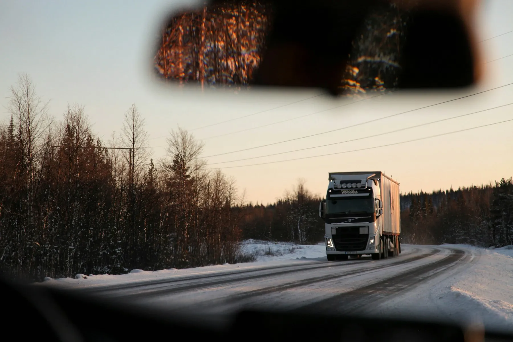

Nedostatek řidičů
Máte vozidla a zakázky, ale chybí lidé s příslušnou skupinou.
Týmy řidičů pro místní rozvoz, regionální distribuci a mezinárodní přepravu. Ověřujeme skupiny, kód 95 (profesní způsobilost řidiče), kartu řidiče (tachograf) a zkušenosti.

Equss Outsourcing organizuje týmy řidičů skupiny B (rozvoz, kurýři), C (nákladní vozidla) a C+E (soupravy, mezinárodní přeprava). Před zahájením ověřujeme řidičský průkaz, kód 95 (profesní způsobilost řidiče), kartu řidiče (tachograf) a zkušenosti; rozsah práce, trasy a vyúčtování stanovujeme individuálně pro každý projekt.
Máte vozidla a zakázky, ale chybí lidé s příslušnou skupinou.
Objem přepravy se periodicky zvyšuje, např. před svátky.
Spouštíte nové distribuční linky nebo mezinárodní přepravu.
Chcete snížit fluktuaci a mít jednoho partnera odpovědného za obsazení.
Skupiny, vozidla, trasy, počet řidičů a termín.
Řidičské oprávnění, kód 95, karta řidiče (tachograf), zkušenosti.
Řidiči přiřazení k vozidlům, nákladům a trasám.
Zahájení, dokumenty a první jízdy.
Rozpis, zástupy a reporting.
Odpovědi jsou před formulářem, aby byl rozsah jasný před kontaktem.
Řidiče skupiny B (rozvoz, kurýři), C (nákladní vozidla) a C+E (soupravy s návěsem, i v mezinárodní přepravě). Dostupnost pro konkrétní projekt potvrzujeme po analýze poptávky.
U skupin C a C+E před zahájením ověřujeme kód 95 (profesní způsobilost řidiče) a kartu řidiče (tachograf). Řidiče bez požadovaných oprávnění do realizace nenasazujeme.
Záleží na skupině, zemi realizace a jazykových požadavcích. Reálný počet uvádíme po analýze poptávky — objem předem nedeklarujeme.
Připravíme doporučení rozsahu, modelu vyúčtování a reálného harmonogramu.